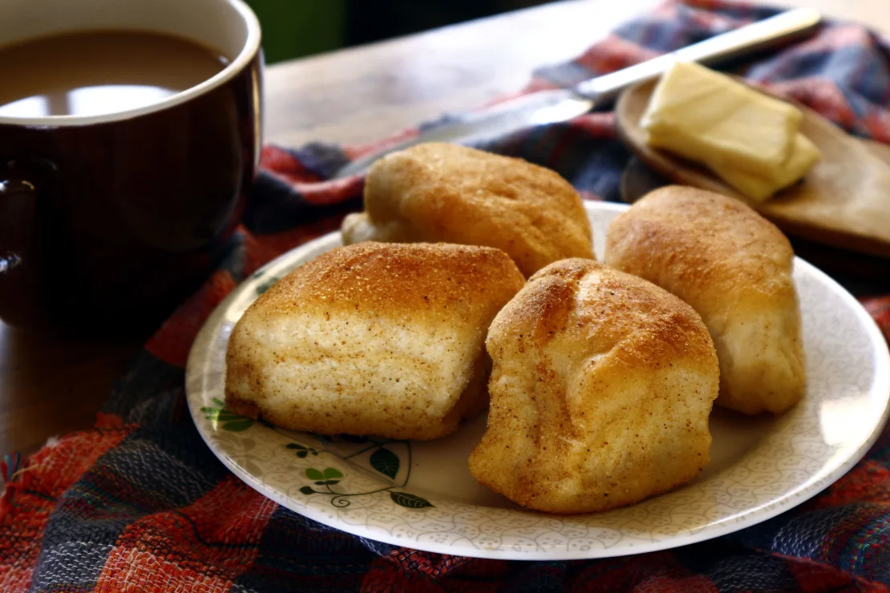
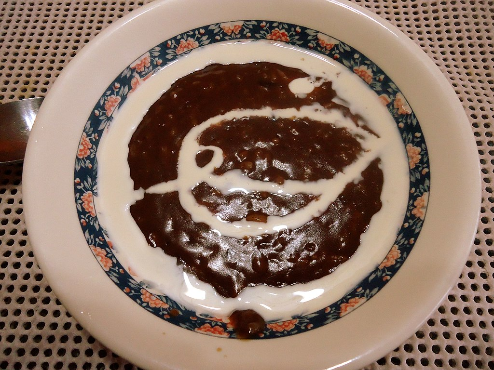
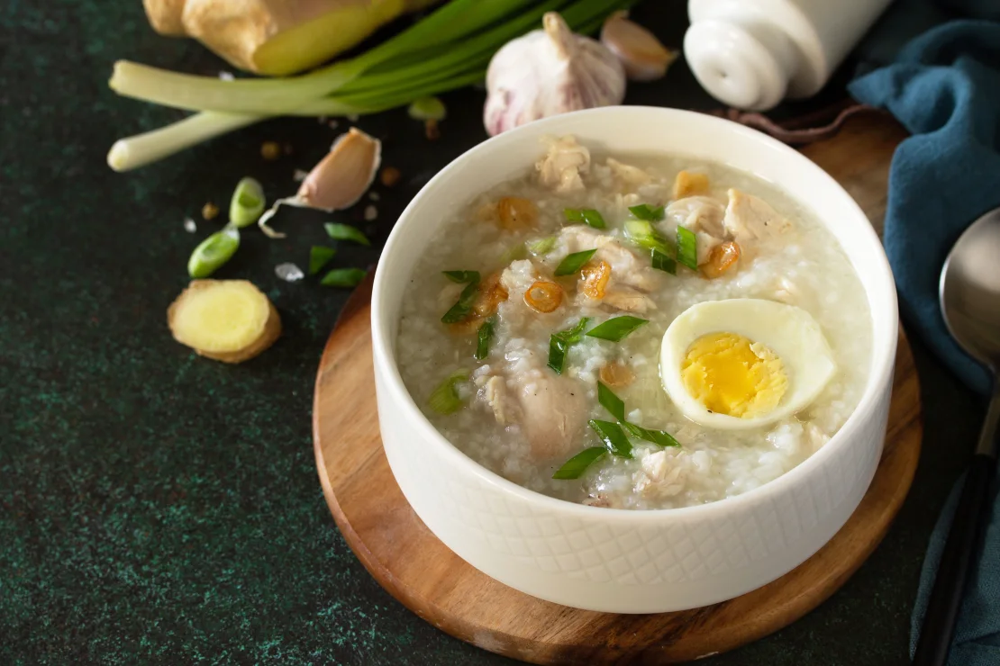
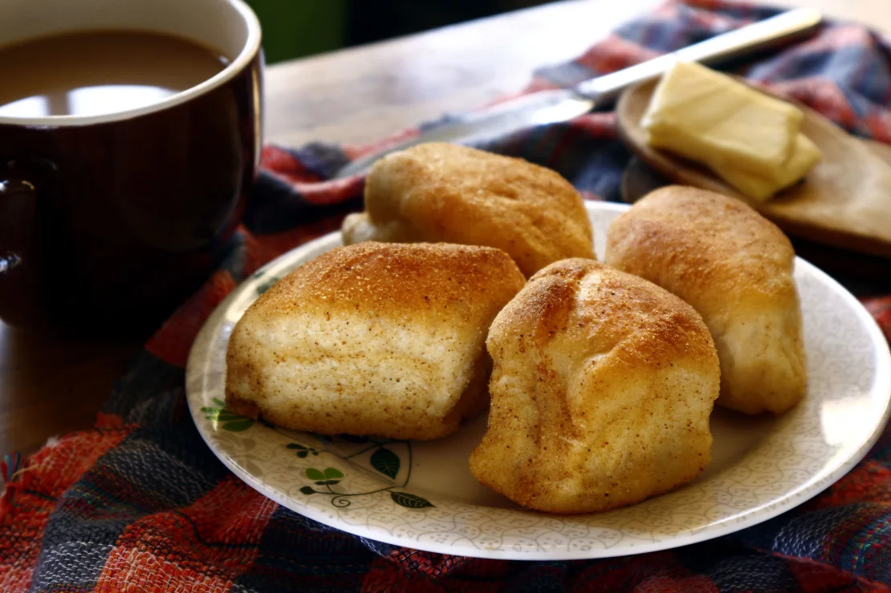
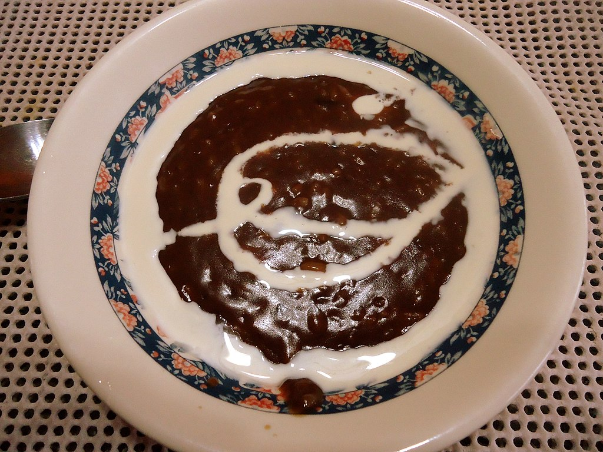
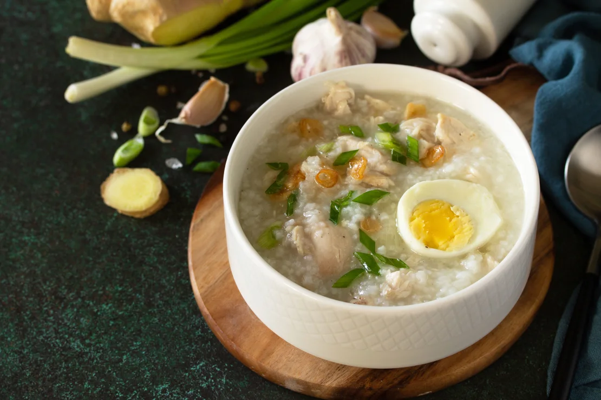

LIST
- Pandesal with hot chocolate
Despite its name, pandesal is actually on the sweet side.
With a golden brown crust surrounding a pillowy and fluffy interior, these lightly sweet bread rolls are one of the most popular breads in the Philippines.
The word pandesal comes from the Spanish term pan de sal, which translates to “bread of salt,” even though pandesal aren’t salty.
These yeast rolls can be stuffed with cheese, jam, eggs or meat but they are good just on their own – and dipped into coffee or hot chocolate (tsokolate).

- Champorado
It is traditionally made by boiling sticky rice with tablea (traditional tablets of pure ground roasted cocoa beans).
It can be served hot or cold, usually for breakfast or merienda, with a drizzle of milk (or coconut milk) and sugar to taste.
It is usually eaten as is, but a common pairing is with salted dried fish (daing or tuyo).

- Lugaw/Arroz Caldo
Arroz caldo is partly Spanish, partly Chinese and 100% Filipino.
The ultimate Filipino comfort food, lugaw is a savory rice porridge that likely made its way to the Philippines via Chinese congee.
The most basic versions are punctuated by ginger, with the rice cooked long and slow with chicken until the grains melt into a thick and velvety consistency.
The porridge can be simply flavored with a couple dashes of patis (fish sauce) and garnished with scallions and fried garlic.
Other toppings include a hard-boiled egg and tokwa’t baboy (fried tofu and boiled pork), which can be added to make it heartier.

- Silog
On the breakfast menu of nearly any local canteen serving cheap meals to students, “silog” will appear several times.
The name of this dish is a catchy portmanteau of the words “sinangag” which is stir-fried garlic rice, and “itlog” which is egg, specifically a fried sunny-side-up egg for this dish.
Silog is basically an addition to several types of meat you can pair it with. Here are a few examples:
- tapa or cured beef jerky for tapsilog
- longganisa or Filipino-style sausages for longsilog
- corned beef for cornsilog
- hotdogs for hotsilog.
- bacsilog, a bacon silog curated for those who miss western breakfast, is also available.

- Taho
Filipinos love taho as an early morning snack, even though it's not exactly a breakfast dish.
Taho is a soft dessert made of silken tofu, garnished with gummy and roe-like sago pearls, and generously sweetened with brown sugar syrup.
Street-side traditional taho is usually served warm and soft. Store-bought versions are typically firm and cold, so you'll have to break them first like a pudding.

Despite its name, pandesal is actually on the sweet side. With a golden brown crust surrounding a pillowy and fluffy interior, these lightly sweet bread rolls are one of the most popular breads in the Philippines. The word pandesal comes from the Spanish term pan de sal, which translates to “bread of salt,” even though pandesal aren’t salty. These yeast rolls can be stuffed with cheese, jam, eggs or meat but they are good just on their own – and dipped into coffee or hot chocolate (tsokolate).
It is traditionally made by boiling sticky rice with tablea (traditional tablets of pure ground roasted cocoa beans). It can be served hot or cold, usually for breakfast or merienda, with a drizzle of milk (or coconut milk) and sugar to taste. It is usually eaten as is, but a common pairing is with salted dried fish (daing or tuyo).
Arroz caldo is partly Spanish, partly Chinese and 100% Filipino. The ultimate Filipino comfort food, lugaw is a savory rice porridge that likely made its way to the Philippines via Chinese congee. The most basic versions are punctuated by ginger, with the rice cooked long and slow with chicken until the grains melt into a thick and velvety consistency. The porridge can be simply flavored with a couple dashes of patis (fish sauce) and garnished with scallions and fried garlic. Other toppings include a hard-boiled egg and tokwa’t baboy (fried tofu and boiled pork), which can be added to make it heartier. 
On the breakfast menu of nearly any local canteen serving cheap meals to students, “silog” will appear several times. The name of this dish is a catchy portmanteau of the words “sinangag” which is stir-fried garlic rice, and “itlog” which is egg, specifically a fried sunny-side-up egg for this dish. Silog is basically an addition to several types of meat you can pair it with. Here are a few examples:
- tapa or cured beef jerky for tapsilog
- longganisa or Filipino-style sausages for longsilog
- corned beef for cornsilog
- hotdogs for hotsilog.
- bacsilog, a bacon silog curated for those who miss western breakfast, is also available.
Filipinos love taho as an early morning snack, even though it's not exactly a breakfast dish. Taho is a soft dessert made of silken tofu, garnished with gummy and roe-like sago pearls, and generously sweetened with brown sugar syrup.
Street-side traditional taho is usually served warm and soft. Store-bought versions are typically firm and cold, so you'll have to break them first like a pudding.